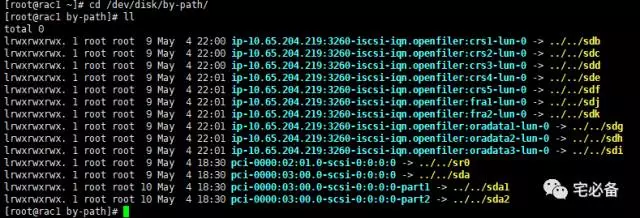
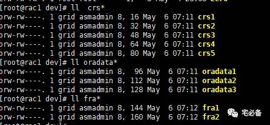

UDEV设置
这个专题说的是如何搭建Oracle 11.2.0.4 RAC 环境
数据库规划

这一节接着上一节的openfiler配置，说如何利用udev来绑定路径
以下所有操作都需在两节点都操作
1. 安装iSCSI (Initiator) Service
两节点相同
查看包有没安装
如果没有请安装，Redhat安装包Package目录下有
rpm -qa | grep iscsi-initiator-utils
2. 启动服务并设置开机启动
service iscsid start
chkconfig iscsid on
chkconfig iscsi on
3. 发现openfiler iscsi target
两节点相同
如出现'iscsiadm: No portals found' 错误
请按照上节步骤更新 /etc/initiators.deny文件
iscsiadm -m discovery -t sendtargets -p 10.65.204.219
4. 登入openfiler iscsi target
两节点相同
出现successful表示登入成功
[root@rac1 udev]# iscsiadm -m node -T iqn.openfiler:crs1 -p 10.65.204.219 --login
[root@rac1 udev]# iscsiadm -m node -T iqn.openfiler:crs2 -p 10.65.204.219 --login
[root@rac1 udev]# iscsiadm -m node -T iqn.openfiler:crs3 -p 10.65.204.219 --login
[root@rac1 udev]# iscsiadm -m node -T iqn.openfiler:crs4 -p 10.65.204.219 --login
[root@rac1 udev]# iscsiadm -m node -T iqn.openfiler:crs5 -p 10.65.204.219 --login
[root@rac1 udev]# iscsiadm -m node -T iqn.openfiler:oradata1 -p 10.65.204.219 --login
[root@rac1 udev]# iscsiadm -m node -T iqn.openfiler:oradata2 -p 10.65.204.219 --login
[root@rac1 udev]# iscsiadm -m node -T iqn.openfiler:oradata3 -p 10.65.204.219 --login
[root@rac1 udev]# iscsiadm -m node -T iqn.openfiler:fra1 -p 10.65.204.219 --login
[root@rac1 udev]# iscsiadm -m node -T iqn.openfiler:fra2 -p 10.65.204.219 --login
Logging in to [iface: default, target: iqn.openfiler:fra2, portal: 10.65.204.219,3260] (multiple)
Login to [iface: default, target: iqn.openfiler:fra2, portal: 10.65.204.219,3260] successful.
5. 开机自动登入iscsi target
两节点相同
[root@rac1 dev]# iscsiadm -m node -T iqn.openfiler:crs1 -p 10.65.204.219 --op update -n node.startup -v automatic
[root@rac1 dev]# iscsiadm -m node -T iqn.openfiler:crs2 -p 10.65.204.219 --op update -n node.startup -v automatic
[root@rac1 dev]# iscsiadm -m node -T iqn.openfiler:crs3 -p 10.65.204.219 --op update -n node.startup -v automatic
[root@rac1 dev]# iscsiadm -m node -T iqn.openfiler:crs4 -p 10.65.204.219 --op update -n node.startup -v automatic
[root@rac1 dev]# iscsiadm -m node -T iqn.openfiler:crs5 -p 10.65.204.219 --op update -n node.startup -v automatic
[root@rac1 dev]# iscsiadm -m node -T iqn.openfiler:oradata1 -p 10.65.204.219 --op update -n node.startup -v automatic
[root@rac1 dev]# iscsiadm -m node -T iqn.openfiler:oradata2 -p 10.65.204.219 --op update -n node.startup -v automatic
[root@rac1 dev]# iscsiadm -m node -T iqn.openfiler:oradata3 -p 10.65.204.219 --op update -n node.startup -v automatic
[root@rac1 dev]# iscsiadm -m node -T iqn.openfiler:fra1 -p 10.65.204.219 --op update -n node.startup -v automatic
[root@rac1 dev]# iscsiadm -m node -T iqn.openfiler:fra2 -p 10.65.204.219 --op update -n node.startup -v automatic
6. 查看设备wwm号
两节点相同
到这里已经可以在系统中看到openfiler的磁盘，可是重启后路径名会改变，这时需要利用udev固定路径名

这里我们固定sdb到sdi
sda为本地硬盘
[root@rac1 by-path]# scsi_id -g -u /dev/sdb
14f504e46494c4552797059756e632d594b67312d5a764661
[root@rac1 by-path]# scsi_id -g -u /dev/sdc
14f504e46494c45526769557069492d7a5958372d50743541
[root@rac1 by-path]# scsi_id -g -u /dev/sdd
14f504e46494c45524144767274662d65564d622d75734b73
[root@rac1 by-path]# scsi_id -g -u /dev/sde
14f504e46494c4552794966445a502d6771374a2d4c524361
[root@rac1 by-path]# scsi_id -g -u /dev/sdf
14f504e46494c4552536963546c422d55595a372d6c517649
[root@rac1 by-path]# scsi_id -g -u /dev/sdg
14f504e46494c455241476c7336482d6d4c464c2d39496747
[root@rac1 by-path]# scsi_id -g -u /dev/sdh
14f504e46494c45523246696a774b2d79536c472d31654534
[root@rac1 by-path]# scsi_id -g -u /dev/sdi
14f504e46494c45524f4c654461782d354f78632d6946776b
[root@rac1 by-path]# scsi_id -g -u /dev/sdj
14f504e46494c4552713652304c332d655632592d375a7548
[root@rac1 by-path]# scsi_id -g -u /dev/sdk
14f504e46494c4552647a547a66532d516a46462d46563131
7. 设置udev规则
两节点相同
注意到这里需要先建立grid用户和asmadmin组，下期将介绍
[root@rac2]# vim /etc/scsi_id.config
options=--whitelisted --replace-whitespace
在/etc/udev/rules.d/下新建rules文件
vim /etc/udev/rules.d/99-oracle-asmdevices.rules
KERNEL=="sd*", BUS=="scsi", PROGRAM=="/sbin/scsi_id --whitelisted --replace-whitespace --device=/dev/$name",RESULT=="14f504e46494c4552797059756e632d594b67312d5a764661",NAME="crs1", OWNER="grid", GROUP="asmadmin", MODE="0660"
KERNEL=="sd*", BUS=="scsi", PROGRAM=="/sbin/scsi_id --whitelisted --replace-whitespace --device=/dev/$name",RESULT=="14f504e46494c45526769557069492d7a5958372d50743541",NAME="crs2", OWNER="grid", GROUP="asmadmin", MODE="0660"
KERNEL=="sd*", BUS=="scsi", PROGRAM=="/sbin/scsi_id --whitelisted --replace-whitespace --device=/dev/$name",RESULT=="14f504e46494c45524144767274662d65564d622d75734b73",NAME="crs3", OWNER="grid", GROUP="asmadmin", MODE="0660"
KERNEL=="sd*", BUS=="scsi", PROGRAM=="/sbin/scsi_id --whitelisted --replace-whitespace --device=/dev/$name",RESULT=="14f504e46494c4552794966445a502d6771374a2d4c524361",NAME="crs4", OWNER="grid", GROUP="asmadmin", MODE="0660"
KERNEL=="sd*", BUS=="scsi", PROGRAM=="/sbin/scsi_id --whitelisted --replace-whitespace --device=/dev/$name",RESULT=="14f504e46494c4552536963546c422d55595a372d6c517649",NAME="crs5", OWNER="grid", GROUP="asmadmin", MODE="0660"
KERNEL=="sd*", BUS=="scsi", PROGRAM=="/sbin/scsi_id --whitelisted --replace-whitespace --device=/dev/$name",RESULT=="14f504e46494c455241476c7336482d6d4c464c2d39496747",NAME="oradata1", OWNER="grid", GROUP="asmadmin", MODE="0660"
KERNEL=="sd*", BUS=="scsi", PROGRAM=="/sbin/scsi_id --whitelisted --replace-whitespace --device=/dev/$name",RESULT=="14f504e46494c45523246696a774b2d79536c472d31654534",NAME="oradata2", OWNER="grid", GROUP="asmadmin", MODE="0660"
KERNEL=="sd*", BUS=="scsi", PROGRAM=="/sbin/scsi_id --whitelisted --replace-whitespace --device=/dev/$name",RESULT=="14f504e46494c45524f4c654461782d354f78632d6946776b",NAME="oradata3", OWNER="grid", GROUP="asmadmin", MODE="0660"
KERNEL=="sd*", BUS=="scsi", PROGRAM=="/sbin/scsi_id --whitelisted --replace-whitespace --device=/dev/$name",RESULT=="14f504e46494c4552713652304c332d655632592d375a7548",NAME="fra1", OWNER="grid", GROUP="asmadmin", MODE="0660"
KERNEL=="sd*", BUS=="scsi", PROGRAM=="/sbin/scsi_id --whitelisted --replace-whitespace --device=/dev/$name",RESULT=="14f504e46494c4552647a547a66532d516a46462d46563131",NAME="fra2", OWNER="grid", GROUP="asmadmin", MODE="0660"
8. 启动udev
/sbin/start_udev
绑定完成后如图：

到这里udev绑定完成，下期将介绍软件安装所需环境的搭建
9.其他iscsiadm命令
以下为常用的iscsiadm命令供参考，无需执行
删除所有iscsi target 记录
iscsiadm -m node -o delete all
查看iscsi发现记录
iscsiadm -m node
登录iscsi存储
iscsiadm -m node -T iqn.openfiler:crs1 -p 10.65.204.219 --login
iscsiadm -m node -T iqn.openfiler:crs1 -p 10.65.204.219 -l
登出iscsi存储
iscsiadm -m node -T iqn.openfiler:crs1 -p 10.65.204.219 -u
显示会话信息
iscsiadm -m session